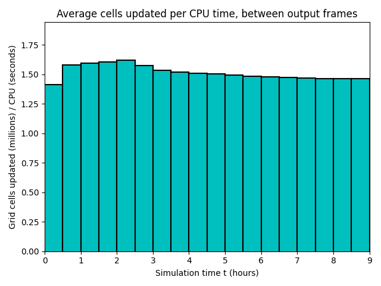

Datetime: 2022-07-26 14:30 From: /Users/rjl/clawpack_src/clawpack_master/geoclaw/examples/tsunami/chile2010/_output
============================== Timing Data ==============================
Integration Time (stepgrid + BC + overhead)
Level Wall Time (seconds) CPU Time (seconds) Total Cell Updates
1 0.293 0.296 0.864E+05
2 0.852 1.053 0.386E+06
3 21.247 61.188 0.214E+08
total 22.391 62.537 0.219E+08
All levels:
stepgrid 22.183 62.039
BC/ghost cells 0.198 0.486
Regridding 0.103 0.206
Output (valout) 1.895 1.829
Total time: 24.463 64.659
Using 3 thread(s)
Note: The CPU times are summed over all threads.
Total time includes more than the subroutines listed above
Note: timings are also recorded for each output step
in the file timing.csv.
clock_rate = 1000000000 per second, count_max = 9223372036854775807
clock_start = 1658860170404940000, clock_finish = 1658860194868039000
=========================================================================


